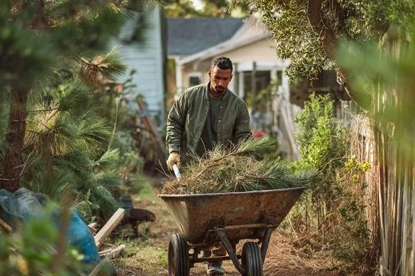
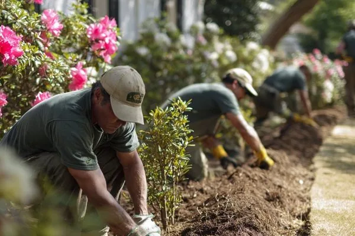

Gopher Connect, made simple.
This is your step-by-step guide to staffing your business on demand — couriers, crews, cleaners, trades, event staff, and warehouse hands, right when you need them. You describe the work, you decide what to pay, and qualified local Gophers raise their hand. Never let a staffing gap slow you down.
Sign in to Connect
Connect is passwordless — there's nothing to remember. You sign in with a one-time code sent to your phone or email.
- Go to the Connect sign-in and choose Email or SMS.
- Enter the email or mobile number on your account and tap Send code.
- Type the 6-digit code we send. Once it's verified, tap Sign In — that's it.
Pick your path
Under “New to Connect?” choose the option that matches you. Both end up in the same place — a Connect account tied to your Gopher profile.
Create your account just once
Signup is two short screens. The first creates your personal Gopher identity; the second creates your business.
1 · Personal info
This is the same profile used for Gopher Request, so you'll only do it once: name, date of birth, phone, email, address, your role at the company, and how you discovered Gopher (with an optional referrer's Gopher User ID).
2 · Business info
Now tell us about the business so we can create your Connect account:
- Business name and industry (Retail & E-commerce, Logistics, Hospitality, Construction, Property Management, Healthcare, and more).
- Company size — anywhere from 1–9 employees to 1,000+.
- EIN, business address, and an optional website.
- Select a plan — Starter, Business, or Enterprise (you can change this later).
3 · You're in
The Welcome to Gopher Connect! screen confirms your account and shows two numbers worth saving: your Gopher User ID and your Connect Account #. Both are also emailed to you and stored in your profile. Tap Enter Dashboard to get going.
Choose a plan
Pick the plan that fits how often you staff up. There are no hidden fees — pay only for what you use, or upgrade for premium features and priority access. You can start free and change anytime.
- 5 requests per billing cycle
- Access to standard worker pool
- In-app payment processing
- Basic job history & reporting
- Email support
Includes 5 free requests per billing cycle. Once you've used your 5, additional requests are $35 per pack of 5 — or upgrade to Business for unlimited requests.
- Unlimited requests
- Priority worker matching
- Preferred worker lists (MY Gophers)
- Consolidated monthly billing
- Exclusive access to Gopher Elite workers
- Deferred payment options
- Volume pricing & contracts
- API & systems integration
- Custom reporting & analytics
- Dedicated workforce creation
- White labeling options
- 24/7 priority support
The dashboard
Your portal home gives you a live snapshot of every request. Tap any tile to filter, or hit + New Request to post a job.
- Pending — awaiting your action (workers are interested, pick one).
- Active — a worker is on the way or on the job.
- Scheduled — booked for a future date and time.
The left rail also holds Previous Requests, your Inbox, your Account (Business info, Personal info, Payment Info, Users & access, MY Gophers, Refer Gopher), and Resources — including Ask Gopher, the in-portal assistant.
From request to connected, in minutes
Posting a job follows the same friendly flow as Gopher Request — Pick a service → Job details → Worker info → Locations → Worker pay → Review → Submitted. The moment you submit, every qualified Gopher in range is notified. Below are the parts that matter most for businesses.
1 · Pick a service
Start with the category that fits — it decides which workers see your job and what details we ask for next.


2 · Crew size & the right kind of worker
Need more than one set of hands? Set your crew size and decide whether you're paying a flat job price or by the hour. Then define what “qualified” means for this job — filter by tier, certification, or rating, or open the request to everyone within reach.
3 · Decide what to pay
You set the price, and 100% of it goes to your Gopher. Not sure what's fair? Tap Suggested offer assistance — a slider built from thousands of similar requests in your area shows a Low / Fair / Generous range. Drag to the number that works; you always have the final say. On many jobs you can also request bids from local workers instead.
4 · Review, schedule & submit
Confirm everything in one place, choose your payment method, and pick your timing — ASAP, flexible, or a specific date & time. Accept the short liability waiver and the submit button turns on.
Choosing & hiring: Hire · Consider · Deny
Open your live request to see everyone who raised their hand. Every interested worker is a real choice you make — not an algorithm assigning a stranger. Review a profile, then pick an action.
- Hire — lock that worker in for the job.
- Consider — hold them in a shortlist while you compare; approve or deny later.
- Deny — pass on that worker.
MY Gophers — build your bench
The Gopher who showed up on time, did the work right, and made the day easier? Save them. They become part of your MY Gophers list — your private, on-demand team that gets first dibs the next time you post.
How “hire again” works
- Pick a saved worker, choose the type of work, and we alert them immediately.
- If the job needs more than one worker, add other MY Gophers to give them first chance — or skip to send it out normally.
- To keep your job on schedule, the request also opens to other available workers after 5 minutes. Anyone outside MY Gophers still needs your approval before they're hired.
You can also recommend a MY Gopher — passing a trusted worker along so other Gopher users can find them. Recommendations are tracked in your referral history.
Account & users
Everything about your business lives under Account. From here you can review and edit Business information, Personal information, your plan, and your Payment Methods (added securely through Stripe).
Users & access
Invite teammates and give each the right level of access. Roles are:
- Owner — full access, including billing and ownership transfer.
- Admin — manage users, requests, and payment methods.
- User — submit and view their own requests.
Trust & verification
Two badges build trust on Connect — one for you, one for your business. Both are quick, and both help the best workers say yes faster.
TrustShield — verify your identity
TrustShield confirms the real person behind the account. From your dashboard, tap Add TrustShield and complete three quick steps:
- Photograph the front of your ID — a live photo of a government-issued ID.
- Photograph the back — the barcode side, captured live.
- Add a selfie — we match it to your ID to confirm it's you.
Verify once and it's permanent — you're never asked again. Age-restricted deliveries require identity verification either way: you can submit identification for a single order, or add TrustShield and stay verified for as long as you carry the badge. TrustShield also takes $1 off the age-restricted fee on every order. You must be 21 or older to order age-restricted at all.
Verified business
Your company can earn a Verified business badge. Connect checks your EIN and website domain, followed by a quick manual review. Once approved, the badge appears on your business profile as a trust signal to workers.
Confirm & rate
When your Gopher marks the job complete, you'll get a notification. Open the request and finish up.
- Tap Confirm once you've verified the work was done right.
- Rate your Gopher on accuracy, communication, quality, and timeliness — ratings shape the jobs they see next, so a job well done deserves 5 stars.
- Save a standout as MY Gopher for next time.
Previous requests & repeat jobs
Every request lives under Previous Requests, filtered by the pills across the top — All (the default),  -To’s, Completed, Expired, and Cancelled. Open any one to see the full details, or re-run a job you liked.
-To’s, Completed, Expired, and Cancelled. Open any one to see the full details, or re-run a job you liked.
Two ways to run a job again
- Request again NOW ⚡️ — re-sends that request exactly as it was, immediately. If the Gopher who did it is on your MY Gophers bench, they get first dibs automatically.
- Request again w/ edits — prefills a new request from the old one, lets you pick which MY Gophers get first dibs, and drops you on Review & submit so you can change anything before it goes out.
My -To’s — the jobs you run over and over
Got a job you run every week? Save it as a -To and it re-sends with a single tap — no review screen, no confirmation. Tick the checkbox on any Completed request to start one. The first time you do, a short intro explains the one-tap behaviour before the editor opens.
A -To is a copy you own, so everything is editable before you save it:
- Name it something you'll recognise on the dashboard — “Friday catering run.”
- Adjust the request type and details if the job has drifted since last time.
- Set the payment to your Gopher. It arrives carrying the amount a worker already accepted for that job — your best odds of it being picked up again — but you can change it.
- Choose the card that gets charged, and which MY Gophers it goes to first.
- Accept the liability waiver, pre-ticked directly above Save.
- Save. It appears as a card at the top of Previous Requests with one button: Request my -To NOW ⚡️.
Plans & billing, explained
Your offer is 100% what your Gopher earns. How Connect bills the rest depends on your plan.
| Feature | Starter | Business / Enterprise |
|---|---|---|
| Requests | 5 free per billing cycle, then $35 per pack of 5 | Unlimited |
| Worker matching | Standard pool | Priority + Gopher Elite access |
| MY Gophers list | — | Included |
| Billing | Per request | Consolidated monthly billing |
| Payment timing | At request | Deferred payment options |
Refer & earn
Everyone you bring to the network earns you both Gopher Rewards credit. Find your Referral ID under Refer Gopher, share by SMS or email (or pull from your contacts), and watch it land in your referral history.
- Refer Gopher Connect — invite another business to manage its workforce.
- Refer Gopher Request — invite someone to post requests and hire Gophers on demand.
- Refer Gopher Go — invite a trusted local worker to start earning on the Gopher Go platform.
- Recommend a MY Gopher — pass a trusted worker along to other Gopher users.
Safety & the no-charge promise
- Your money is protected. When a request is accepted, funds move to a secure holding account via Stripe. If the job isn't completed, the authorization is released.
- No worker, no charge. If we can't connect you with a Gopher, your request simply expires — with no charge and no authorization.
- Connect is a marketplace, not auto-fulfillment. Workers decide whether your offer is worth it. A fair offer in an active area is usually accepted fast.
- Keep it in the app. Message workers safely through Connect — never share private contact details or pay outside the platform.
Need help?
You're ready to connect your business with on-demand talent. For anything else:
- Open Ask Gopher in the portal — the assistant answers questions on billing, requests, workers, and your account, any time.
- Live chat is available Mon–Fri, 8am–6pm EST.
- Email connect@gophergo.io or support@gophergo.io (replies within one business day).
- Prefer to call? Reach the business team at (919) 555-0190.
Don't ebb and flow — just Gopher it!